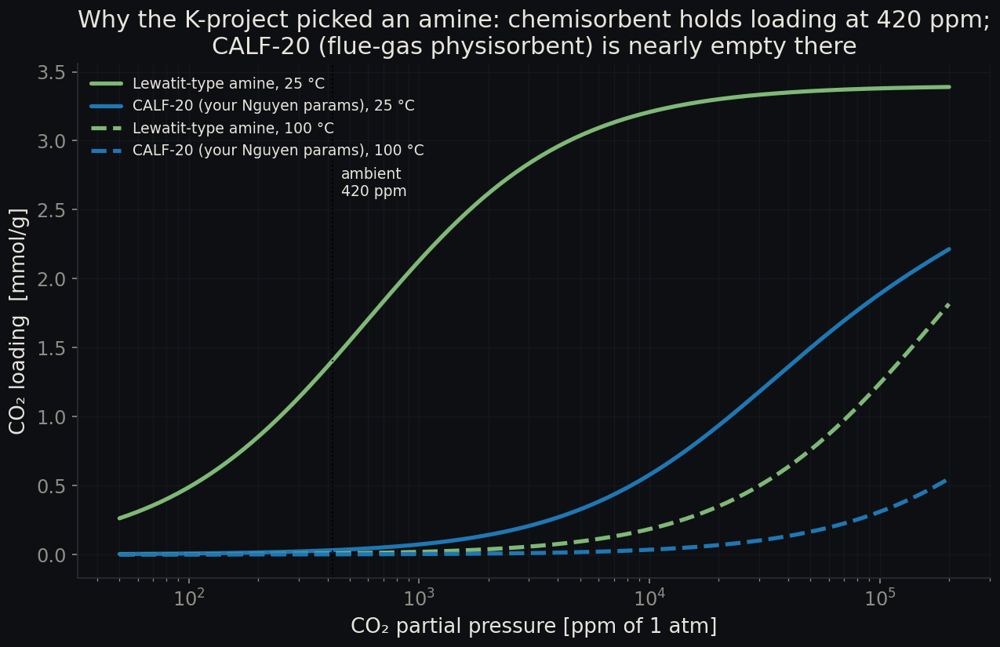
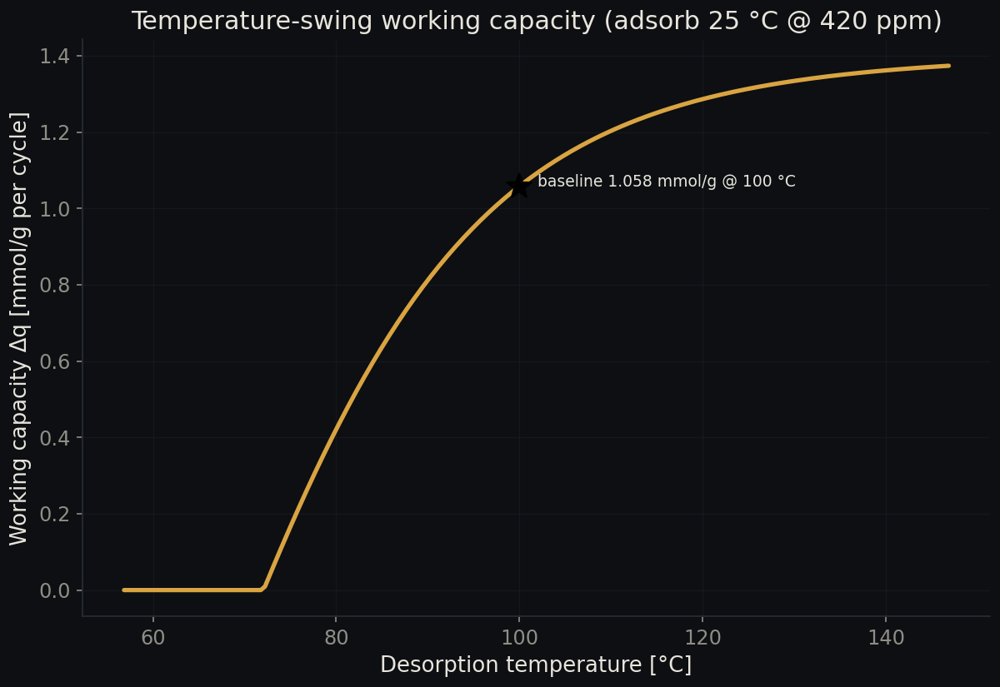
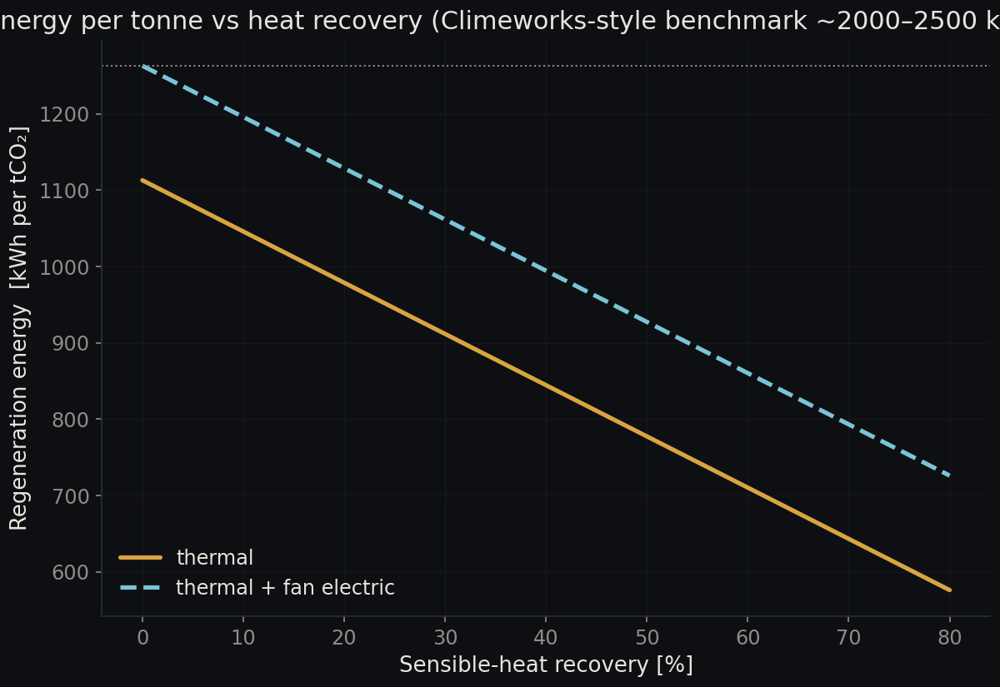
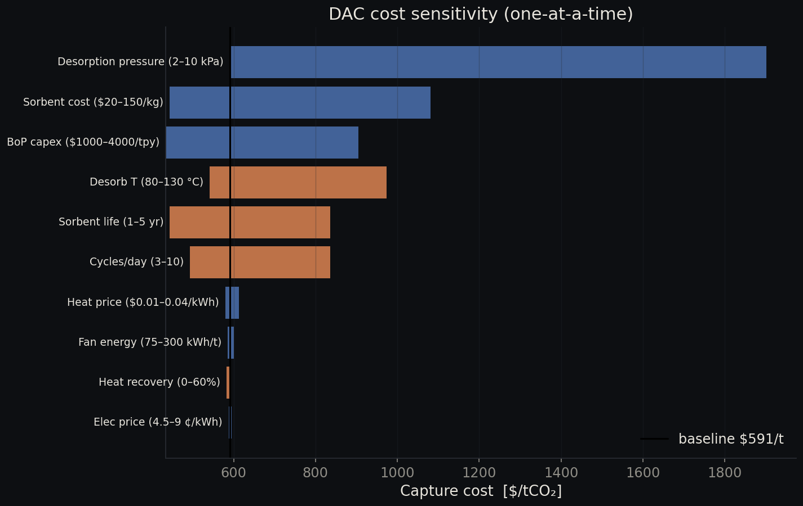

Direct air capture: a fixed-bed cycle and its cost
A temperature-swing adsorption model and capture-cost analysis, and the negative result that redirected a laboratory project.
Most laboratory sorbents are asked to do one job and then, sooner or later, asked to do a harder one. This one had been chosen for flue gas, where carbon dioxide arrives at something like twelve per cent, and the question was whether it could also work on open air, where it arrives at four hundred and twenty parts per million — roughly three hundred times more dilute. The check failed, and the failure turned out to be the useful part.
The negative result
Running the laboratory's own dual-site Langmuir parameters for CALF-20 at direct air capture conditions gives an adsorbed quantity of about 0.031 millimoles per gram at 420 parts per million. That is effectively zero working capacity: the desorption backpressure defeats any temperature swing that could be run in practice. CALF-20 is a flue-gas physisorbent, and the arithmetic says so plainly. The implementation was validated against the laboratory's own spreadsheet first, reproducing its affinity constant at 303 kelvin to three figures, so the disagreement is with the material rather than with the code.
That is the quantitative justification for moving to an amine chemisorbent, which the cost model then runs on.
The amine case
| Quantity | Value |
|---|---|
| Working capacity per cycle | 1.06 moles per kilogram |
| Regeneration energy, thermal | 1,113 kilowatt hours per tonne |
| Regeneration energy, electrical | 150 kilowatt hours per tonne |
| Capture cost, baseline | about $591 per tonne |
Adsorption at 25 degrees Celsius and 420 parts per million, desorption at 100 degrees Celsius and 2 kilopascals of carbon dioxide, without heat recovery.
The cost sits inside the published range for small direct air capture. The sensitivity analysis puts cycles per day, sorbent cost, and sorbent lifetime at the top, which means the economics are governed by how hard the bed is worked and how long it survives, not by the thermodynamics of the swing.

Isotherms for the amine sorbent and CALF-20. At the concentration of air, the two materials are not in the same regime.

Working capacity against desorption temperature. The curve shows how much swing is bought by each additional degree.

Regeneration energy per tonne against heat recovery fraction.

Cost sensitivity. Cycles per day, sorbent cost and sorbent life dominate.
Limits
The amine isotherm is a single-site Langmuir calibrated to literature anchor points rather than a full Toth fit, which is what publication-grade work would use. Humidity is ignored, and this is the largest single omission: water co-adsorption on an amine roughly doubles the real thermal duty, so the energy figures above should be read as a floor. The breakthrough calculation uses a linear driving force in a single well-mixed stage, which gives timing but not spatial profiles.
The code
Python reference implementation, Julia and Octave ports, and the formula-driven workbook. The archive holds the source only: no generated figures, no bulk
data. Each model runs from its own README.md.